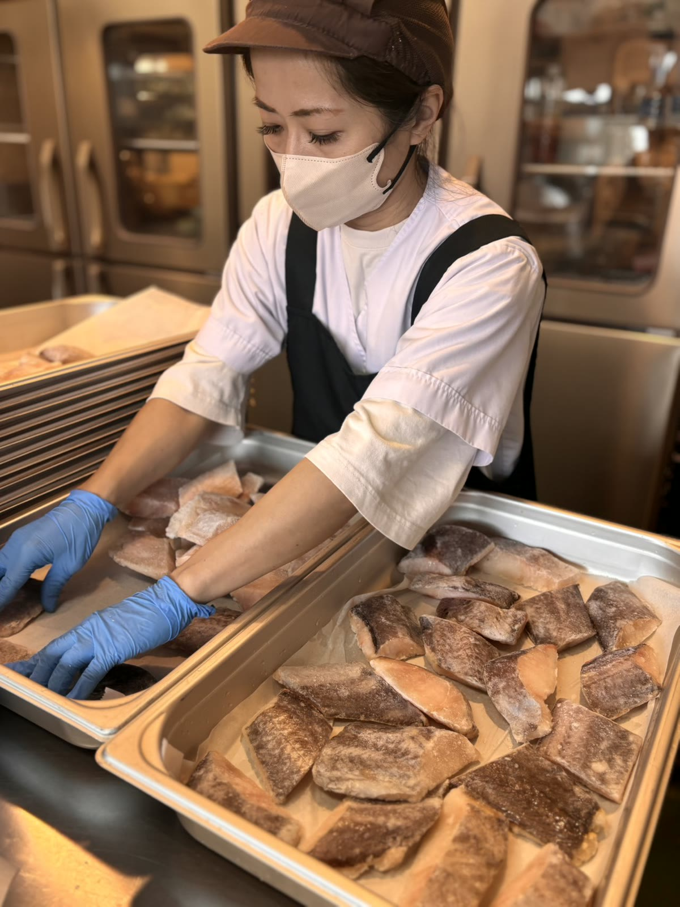
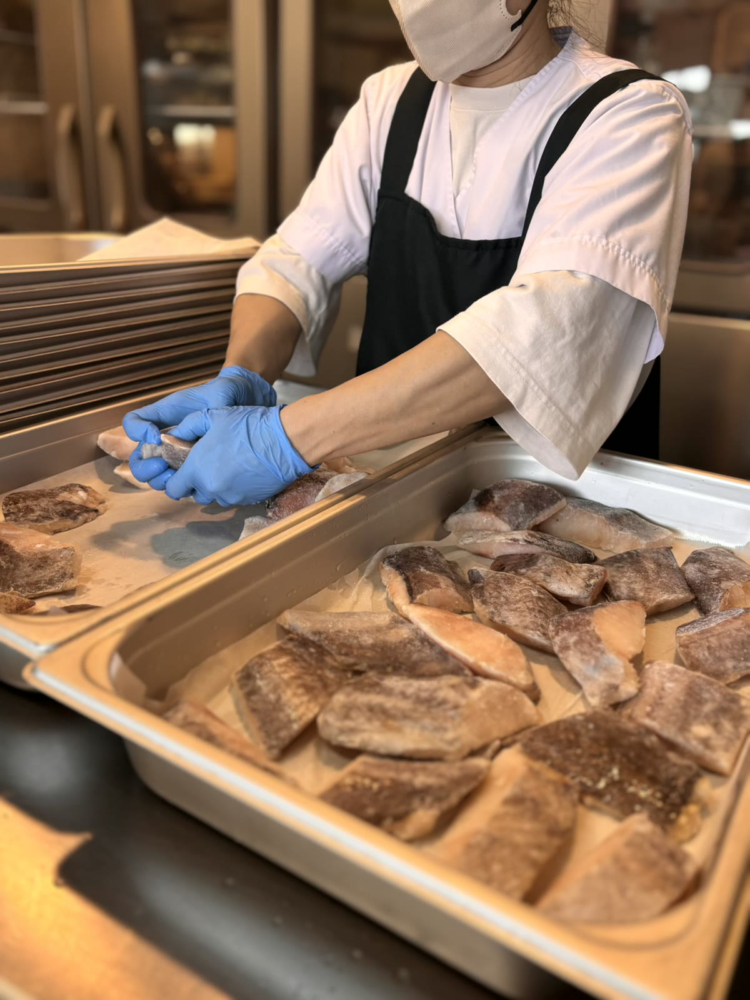
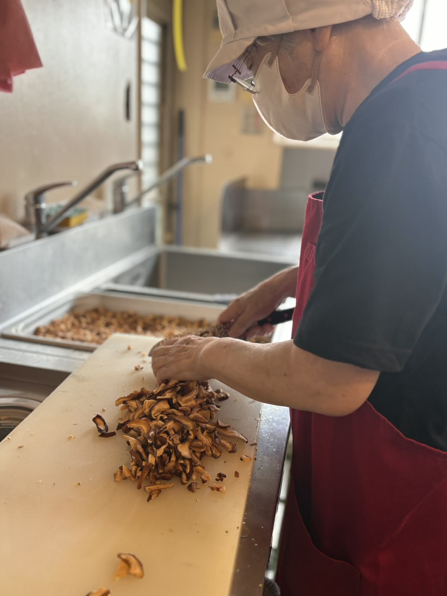
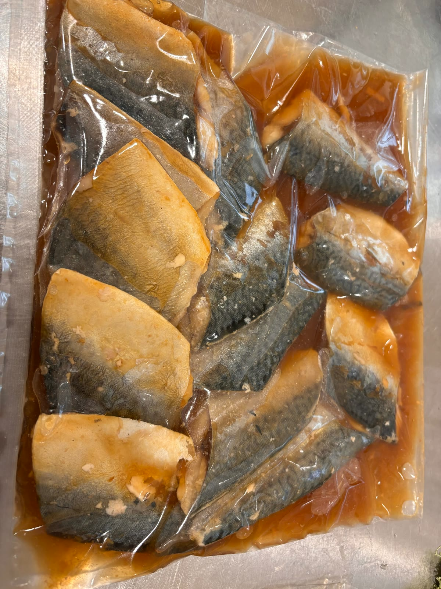

お知らせ
- 2026年08月15日
- 会社案内パンフレットを更新しました
- 2026年06月10日
- 施設様向けの試食・ご相談を随時受け付けています
施設経営の課題
厨房は、いま経営の問題です。
-
人材
調理スタッフが確保できない
採用しても続かず、欠員が出るたびに現場が止まる。慢性的に人手が足りない状態が常態化しています。
-
採用
求人を出しても応募が来ない
募集条件を上げても集まらない。採用と教育にかけた時間が、そのまま管理者の負担になります。
-
コスト
人件費と残業代が上がり続ける
食材費だけでなく、時間外と欠員対応の人件費が厨房の原価を押し上げています。
-
品質
味と衛生が担当者によってぶれる
誰がつくるかで仕上がりが変わる。衛生基準の徹底も、現場の努力に頼りきりになっています。
O.C.Kは人を足すのではなく、調理工程そのものを厨房の外へ移します。
O.C.Kの考え方
設計で直す。
自社セントラルキッチンに仕込みと調理を集約し、施設に残す作業を再加熱・盛付・配膳・洗浄だけにします。必要な人員が減れば、採用も、教育も、原価も追いかけられるようになります。
CHANGE厨房運営はこう変わります。
自社セントラルキッチンの仕組みで、厨房業務の大部分を移します。
※朝・昼・夕 各30食を想定した場合の一例です。
従来の施設厨房
- 仕込み
- 調理
- 盛付
- 配膳
- 洗浄
合計 約0時間／日
O.C.K 導入後
セントラルキッチンで実施
- 調理
- ▶
- 急速冷却・真空
- ▶
- 冷蔵配送
施設で行う業務
再加熱・盛付・配膳・洗浄
- 朝 3時間
- 昼 3.5時間
- 夕 3.5時間
合計 約0時間／日
調理業務に加え、献立作成・発注・仕込み・調理管理の負担も軽減します。
BUSINESS委託の範囲は、2つから選べます。
厨房を丸ごとお任せいただくことも、完全調理済食材だけを仕入れていただくこともできます。


MEALS効率化しても、食事は落とさない。
日々の常食から刻み・ミキサー食、行事食まで。実際にご提供しているお食事です。


- 常食
- 一口大
- 粗刻み
- 極刻み
- ミキサー
※食形態対応・行事食などは、厨房業務委託をご利用の場合に対応可能です。
EVENT行事食・イベントもそのまま続けられます。
「委託にすると行事食ができなくなるのでは」というご不安を、いちばん多くいただきます。

お祝いのデコレーションケーキ

季節のイベントデザート

クリスマスの特別メニュー

節句に合わせた行事食

外出・行楽用のお弁当

大皿を並べたビュッフェ形式

選ぶ楽しみのあるデザート

手巻き寿司・大皿の行事メニュー
CASE導入事例とお客様の声

直営厨房の人材確保が課題。
委託後は行事食まで
任せられるようになりました。
これまで直営で厨房を運営されていましたが、人材確保や厨房運営の負担が課題となっていました。O.C.Kへの委託後は、安定した食事提供に加え、季節の行事食などにも柔軟に対応。日々の食事からイベント時まで安心して任せられると、ご満足いただいています。
-
味付けが良く、前より食欲が進むようになった利用者さんもいらっしゃいます。
施設ご担当者様
-
委託だと行事食やイベント等ができなくなるのでは…と不安でしたが、O.C.Kさんは対応してくれて本当によかったです。
施設ご担当者様
-
相談や要望に対して、親身にスピーディーに対応してもらえるので、大変ありがたいです。
施設ご担当者様
GALLERY厨房のようす
大分市の自社セントラルキッチンで、食材の状態を見ながら一つひとつ丁寧に。
人の目と手を通して仕上げた料理を、冷蔵のまま施設へお届けします。

切り身の大きさや状態を確認しながら、次の調理工程へ進めます。



FLOW導入までの流れ
ご相談からご契約・運営開始まで。まずは試食からでもかまいません。
- 01
ご相談・お問い合わせ
お悩みやご要望をお聞かせください。お電話・フォームどちらでも承ります。
- 02
現地調査・ヒアリング
厨房設備・食数・食形態を拝見し、最適なプランを検討します。
- 03
ご提案・お見積り
委託範囲は施設様に合わせて調整し、運営プランとお見積りをご提示します。
- 04
試食・ご検討
実際の食事をご試食いただけます。まずは試食からでもOKです。
- 05
ご契約・運営開始
契約後、スムーズに運営を開始します。
施設様の状況に合わせて、導入準備から運営開始後まで継続してサポートします。
厨房の状況を、まず聞かせてください。
現地調査・お見積りは無料です。「まずは試食だけ」も歓迎です。